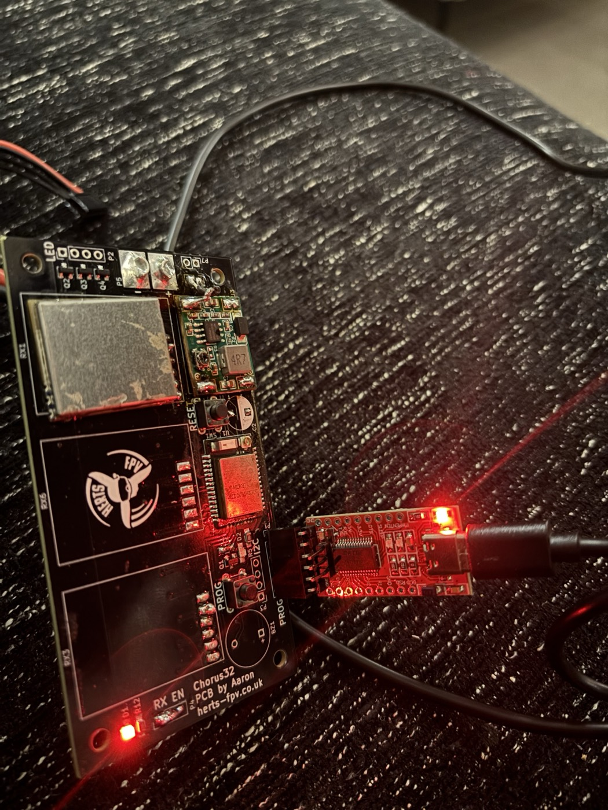
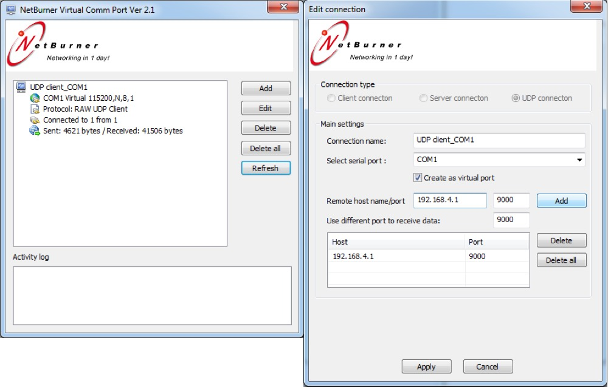

A new board needs a cable once. After that every release goes on over WiFi, from the same page you race from.
Never flashed before — use the
FTDI flasher and write all five files.
Already running V1, V2 or V3 — use
over the air. The partition table has not changed, so
no cable is needed.
The flasher is a small Python GUI that wraps esptool. You do
not need a build environment, a toolchain or the Arduino IDE — just
the released binaries.
pip install esptool PyQt5 pyserialThe board is powered from its own battery. Leaving the FTDI's voltage select header in place feeds it a second supply, and that is how boards get killed. Remove the jumper before you connect anything.

Plug the battery into the XT60 and switch the timer on.
Press and hold RST, then press and hold PROG, then release RST while still holding PROG, then release PROG.
Only now plug it into the PROG pins — after the button dance, not before. Voltage jumper still removed.
python naco_chorus32_flasher.py
Hit Refresh Ports and pick the FTDI's port. On Windows
it is a COM number you can confirm in Device Manager; on
macOS and Linux it looks like /dev/tty.usbserial-….
For a chip that has never been flashed, select all five. For a reflash
of a working board, firmware.bin and
spiffs.bin are enough.
Press Flash ESP32 and leave it alone until it finishes. Then unplug the FTDI, switch the timer off and on, and look for its WiFi network.
| File | Offset | Needed | What it is |
|---|---|---|---|
bootloader.bin |
0x1000 |
First flash only | Second-stage bootloader |
partitions.bin |
0x8000 |
First flash only | Partition table |
ota_data_initial.bin |
0xE000 |
First flash only | Marks which OTA slot to boot |
firmware.bin |
0x10000 |
Always | The program |
spiffs.bin |
0x3D0000 |
Always | The web interface |
V3 ships only the two files that changed. The other three are unchanged since V2 — take them from the V2 folder, the partition table is identical.

Once a board runs V1 or later, no cable is needed again. Join the timer's network, open its page and go to Update. There is a walkthrough of exactly this in the V3 web upgrade video.
Upload firmware.bin first, let the timer restart, then
upload spiffs.bin. Both must come from the same release.
The reason is recovery. The fixed recovery page lives in the new firmware, so installing it first means a failed filesystem upload can still be retried from the browser. The other way round, a failed filesystem upload leaves you on the old firmware's broken recovery route and you are back to the cable.
Chorus32_naco_…, open, no password. Open
192.168.4.1 if your phone does not
offer the page by itself.
Update → choose firmware.bin → Upload. The page
tells you which of the two files it thinks you picked. The timer
restarts on its own.
Your phone has to reconnect to the network after the restart. Then
upload spiffs.bin the same way.
Between the two steps the timer runs new firmware behind the old pages. The Update page reports both versions and warns while they disagree — that warning is expected, and clears when the second upload lands.
Channels, thresholds, calibration and the WiFi name are stored outside both of these images. An update does not clear them.
A half-finished filesystem upload loses the pages but not
the timer: the firmware still serves a built-in upload form. Reconnect to
its WiFi, open 192.168.4.1 and try again.
Only a failed firmware upload needs a cable, and even then the timer keeps running the old firmware until a new one has been written completely. Do not power it off mid-upload and you are unlikely to meet this case.
Only needed if you are changing the firmware. The project builds with PlatformIO:
cd ESP32LapTimer
pio run -e BOARD_MICRO32
The web interface is generated: edit data_src/, never the
data/ folder the build produces. Other board targets are
defined in platformio.ini.
The timer is running but it does not know your channels yet. Setting it up and running a race →